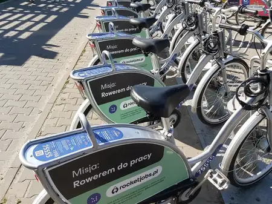
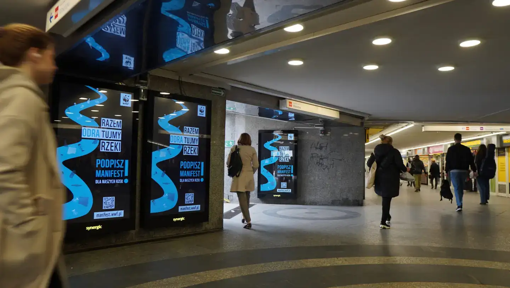
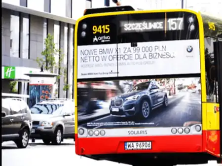
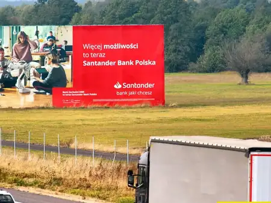
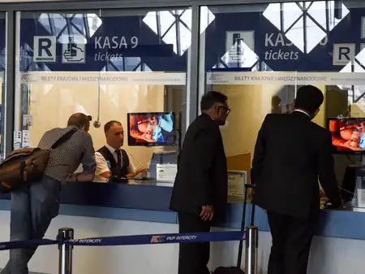
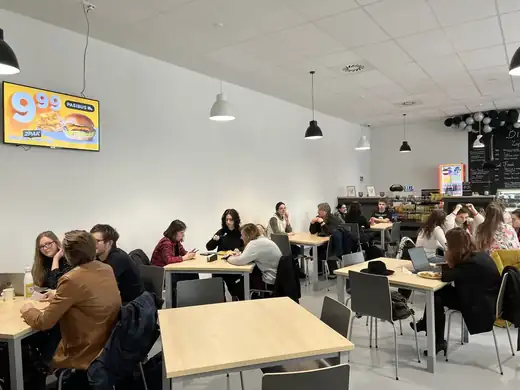

Rowery miejskie
Warszawa, Wrocław, Łódź, Katowice
- Ponad 10 000 rowerów w ofercie
- Dotarcie do 1,8 mln osób miesięcznie na 100 rowerów
- Stacje i miejsca ekspozycji wybrane pod kampanię

Dobieramy nośniki i lokalizacje pod Twoją grupę docelową, przygotowujemy przekaz, planujemy emisję, a po kampanii pokazujemy wyniki. Tak, żeby reklama była efektywna i efektowna.
Zapytaj o kampanięZaufali nam m.in.: Itaka, RocketJobs, Walutomat, Costa Coffee, Aldi, Provident, WWF, Muzeum Powstania Warszawskiego
Każdą kampanię ustawiamy pod klienta: w wybranych miastach i miejscach, w skali, jakiej potrzebujesz.

Warszawa, Wrocław, Łódź, Katowice

Warszawa, Wrocław, Łódź, Katowice, Kraków, Poznań, Trójmiasto, Bydgoszcz

A1, A2, A4

Dworce, przejścia, przystanki autobusowe
Kampanie realizujemy niemal na wszystkich dostępnych dziś nośnikach. Napisz, kogo chcesz dotrzeć i gdzie, a dobierzemy nośniki i lokalizacje.
Zapytaj o kampanięKampanie na zewnątrz i wewnątrz mogą wzajemnie się wspierać i razem tworzyć spójny, skuteczny przekaz dla Twojej grupy docelowej.
Rowery i autobusy miejskie, nośniki przy autostradach i drogach, przystanki. Reklama, którą widać na ulicach miasta i w trasie.

Ekrany w przejściach podziemnych, na dworcach i w lokalach. Przekaz tam, gdzie ludzie czekają i mają chwilę, żeby go zobaczyć.
Zanim reklama trafi na nośniki, przechodzimy z Tobą cztery kroki.
Ustalamy, gdzie kampania ma działać: na zewnątrz czy wewnątrz. Miejsca dobieramy do Twojej grupy docelowej, żeby marka albo produkt były widoczne tam, gdzie trzeba.
Przygotowujemy grafikę albo spot, który przyciąga uwagę i jasno mówi, co chcesz przekazać. Zwięźle, czytelnie i atrakcyjnie.
Układamy harmonogram: gdzie i kiedy pojawiają się reklamy, a przy ekranach plan emisji, żeby w pełni wykorzystać widoczność.
Po kampanii dostajesz raport z wynikami i wnioskami, które wykorzystamy przy kolejnych kampaniach.
Kampanie na rowerach, ekranach i nośnikach przy drogach. Przesuń palcem albo myszą, kliknij, żeby powiększyć.
Firstmedia zrealizuje dla Ciebie kampanię kompleksowo: od wyboru nośników i lokalizacji, przez kreację, po montaż i raport.
Realizując kampanię, pracujemy blisko z klientem. Chcemy zrozumieć jego potrzeby, cele i wartości, bo wtedy kampania jest skuteczniejsza i lepiej dopasowana. Dlatego zamiast jednorazowych zleceń budujemy partnerskie relacje.
Nasz zespół łączy wiedzę branżową z nowymi pomysłami, żeby Twoja marka wyróżniła się na ulicy, w trasie i na ekranach.
i wiele innych firm i instytucji.
Napisz, co chcesz promować, w jakich miastach i w jakim terminie. Odpiszemy z propozycją nośników i kosztów.